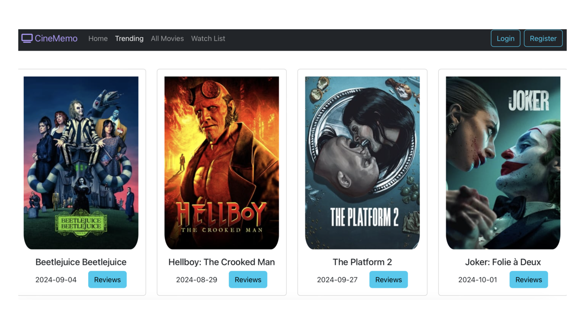

Project Overview
CineMemo is a full-stack web application designed to provide users with a seamless experience for discovering movies, adding films to a personal watch list, and logging reviews for watched movies. The app is built with a responsive and dynamic front-end using React, while the back-end is developed with Spring Boot, allowing for efficient data management and integration with third-party movie APIs.
Key Features
- Personalized Movie Watch List and Reviews: Allows users to save movies to a watch list and log reviews, making it easy to track what they’ve watched and plan future viewings.
- Responsive Front-End: Developed with React using over 10 reusable components to display real-time movie data from the TMDB API. Optimized for smooth, responsive performance across desktop and mobile devices.
- Scalable Back-End: Created a RESTful API with Spring Boot to handle data requests, providing secure and efficient data management and retrieval.
- Reliable Data Storage: Utilized MongoDB for storing user data, including movie reviews and watch lists, supporting scalability and quick access to information.
Technical Details
- Integrated the TMDB API to fetch real-time movie data, including trending movies and detailed information.
- Built the RESTful API in Spring Boot to ensure efficient and secure data processing.
- Leveraged MongoDB for scalable data management, with a schema designed for reliable storage of user data.
- Developed an interactive UI with React, utilizing JSON for data transfer, ensuring a smooth user experience.
- Employed Git for version control, facilitating organized code management and collaboration.